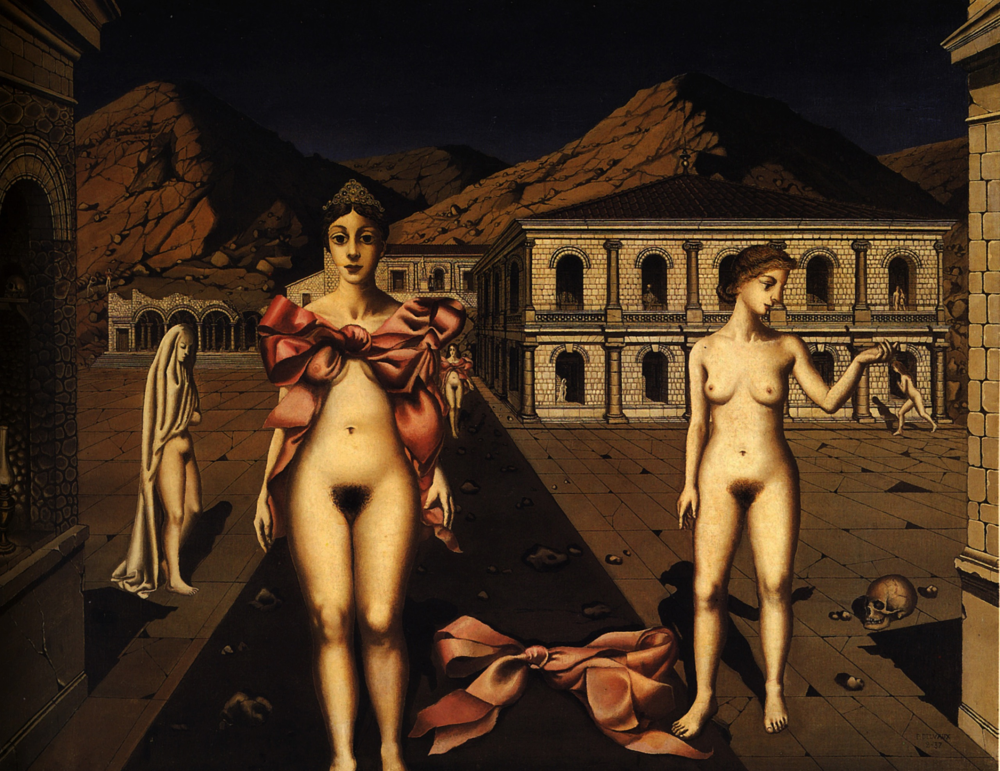
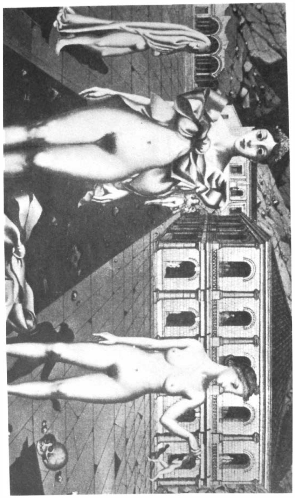

Lágrimas de Eros · Obra 98 de 124
Los lazos rosas (Les Nœuds roses)
Paul Delvaux (1937)

Mujeres desnudas en una plaza de arquitectura italiana al pie de unas montañas, con una calavera en el suelo; una lleva un gran lazo rosa en torno al torso. En 1961 era de Claude Spaak, autor de una monografía sobre Delvaux (Amberes, 1948). Hoy está en el Museo Real de Bellas Artes de Amberes (KMSKA), que la fecha en 1937; Bataille la fecha en 1936.
Lo que hace que destaque
Mujeres desnudas en una plaza de arquitectura italiana al pie de unas montañas, con una calavera en el suelo; una lleva un gran lazo rosa en torno al torso. En 1961 era de Claude Spaak, autor de una monografía sobre Delvaux (Amberes, 1948). Hoy está en el Museo Real de Bellas Artes de Amberes (KMSKA), que la fecha en 1937; Bataille la fecha en 1936.
Contexto histórico
La ficha de Art in Flanders devolvió 429 y no se pudo leer; el enlace sale del buscador. No está documentado cómo pasó de la colección Spaak al museo. En el pie de Bataille, esta frase también va entre comillas: cita a otro autor.
Autoría y procedencia
Paul Delvaux (1897-1994), pintor belga asociado al surrealismo, célebre por sus escenas oníricas de mujeres desnudas en estaciones de tren y plazas arquitectónicas silenciosas.
En los libros
Las lágrimas de Eros, de Georges Bataille · Lámina de la p. 175
«[Delvaux] «se desarrolló en una dirección paralela al surrealismo, sin llegar a formar parte de él».»"he developed in a direction that paralleled Surrealism, without becoming a part of it."Georges Bataille, «Las lágrimas de Eros» (1961), traducido al español de la ed. inglesa de City Lights (1989), p. 175
Ficha pendiente de contrastar con fuentes académicas.
Otras vistas
